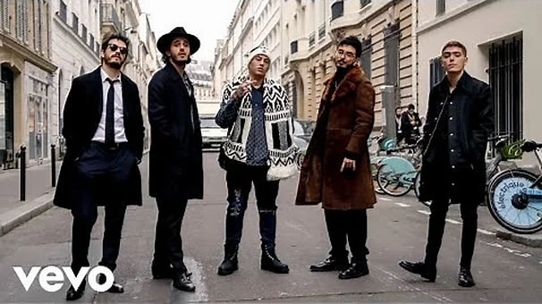

Ultimos lanzamientos
Paris
Morat,Duki
19 May
Junto a la colaboracion de Duki, “Paris” habla sobre ese momento en una relación en el que tienes que cuidarte y enfrentarte a la otra persona cuando te das cuenta de que no es bueno para ti.
Escuchala aqui

Llamada perdida
Morat
17 Feb
Hay canciones que son como levantar una antorcha en medio de la noche esto es “Llamada Perdida”, es una señal de que hay algo que falta por decir.Llamada Perdida es como una guía de cómo ser la peor ex pareja del mundo y está dedicada a todas las personas que se quedaron con cosa por decir cuando terminó una relación…
Escuchala aqui.webp)